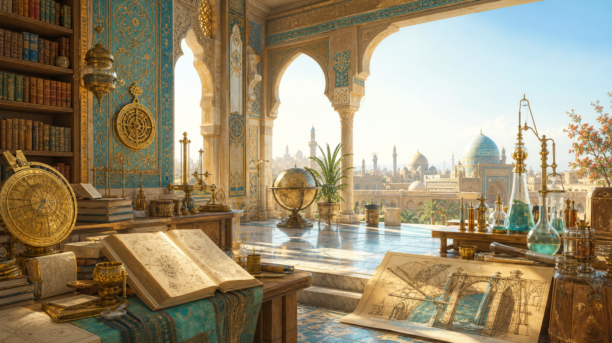

التصنيف العلمي
اختر مجالًا، ثم افتح بطاقة العالم المرتبط به.
الواجهة تعرض العربية المشكّلة للراوي، وبجوارها النص الإنجليزي. يمكن تشغيل القراءة الصوتية لأي محور أو للمجال كاملًا من أزرار الاستماع.

Islamic Scientific Legacy
مَشْرُوعٌ تَوْثِيقِيٌّ يُعِيدُ قِرَاءَةَ جُهُودِ عُلَمَاءِ الحَضَارَةِ الإِسْلَامِيَّةِ فِي الرِّيَاضِيَّاتِ، وَالطِّبِّ، وَالفَلَكِ، وَالهَنْدَسَةِ، وَالكِيمْيَاءِ، وَغَيْرِهَا، وَيَرْبِطُهَا بِمَا وَصَلَ إِلَيْهِ العَالَمُ مِنْ تَقَدُّمٍ تِكْنُولُوجِيٍّ.
A bilingual documentation project tracing how Muslim scholars advanced mathematics, medicine, astronomy, engineering, chemistry, and other sciences that helped shape modern technology.
التصنيف العلمي
الواجهة تعرض العربية المشكّلة للراوي، وبجوارها النص الإنجليزي. يمكن تشغيل القراءة الصوتية لأي محور أو للمجال كاملًا من أزرار الاستماع.